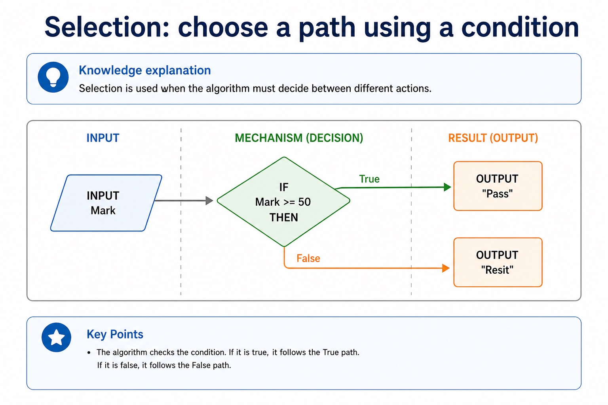
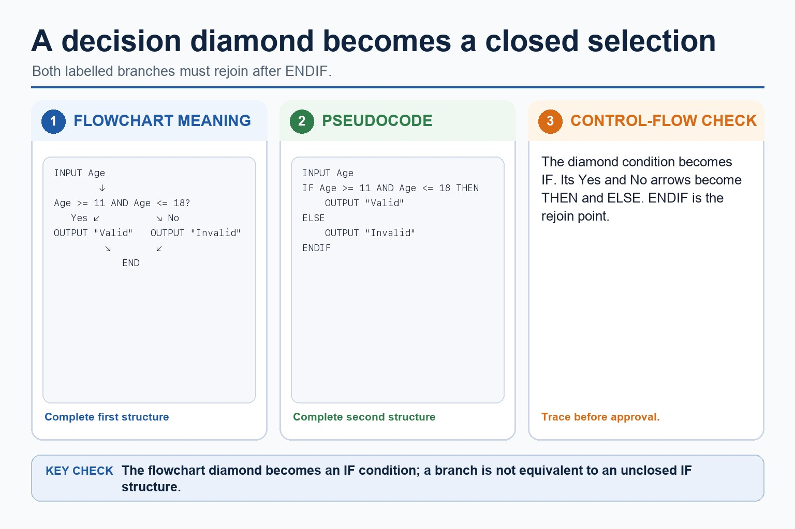
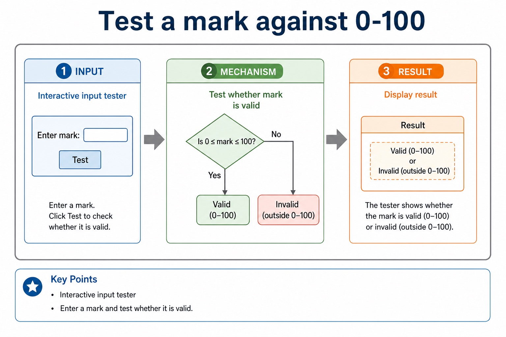

Cambridge AS9618 | Paper 2 | Section 9: Algorithm design and problem-solving
Constructing and interpreting logic statements
Flexible-depth lesson
S9.09 | Learn from the diagrams, test the method, then choose the practice you need.
Choose a Quick, Full or Deep route
Quick route
Use the diagnostic, learning objectives, first worked example and foundation question. Stop once the learner can explain the central distinction accurately.
Full route
Use every knowledge-point material set, the worked method, the terminology check and all questions.
Deep route
Add the prerequisite refresher, ask learners to connect the concept checklist, discuss the labelled extension and complete a transfer question without a model answer.
Part 1 | optional depth
Prerequisite knowledge and quick diagnostic
Recall S9.06 before starting this lesson.
Give one accurate definition or method step before continuing. If it is missing, revisit only that prerequisite.
Open optional prerequisite refresher
The three basic algorithm constructs are sequence, selection and iteration (repetition); students must recognise and use each construct, including combinations of constructs.
Understand and use sequence, selection and iteration.
Part 2 | knowledge-point material sets
Learn each point through visuals
Follow the map, the three-part explanation and the concrete cue. Open precise wording only after the idea is clear.
Open the concept checklist and choose what to teach
logic
statements
condition
algorithm
01
S9.09 · process
Logic · Statements · Condition · Algorithm
Concept map
logicstatementsconditionalgorithm
See how it works
StartLogic statements define parts of an algorithm solution, including decision conditions, loop conditions and Boolean assignments
ChangeA logic statement defines a decision, repetition condition or Boolean assignment in an algorithm solution
Checkuse stepwise refinement until steps are programmable, and construct and interpret logic statements that define decisions, loop conditions or Boolean values
S9.09 diagrams
1 / 4
01
Comparison · 1 of 4
Selection: choose a path using a condition

Open text transcript
Knowledge explanation
Selection is used when the algorithm must decide between different actions.
INPUT Mark
IF Mark = 50 THEN
OUTPUT "Pass"
OUTPUT "Resit"
02
Process · 2 of 4
An algorithm is a solution expressed as defined steps
Open text transcript
An algorithm is a solution to a problem expressed as a sequence of defined steps.
Each step must be unambiguous, ordered where order matters and capable of being carried out.
Identify what data is supplied, state the required transformation and state the exact result.
Record limits, quantity requirements and supported assumptions.
Check that every requirement maps to an input, process, output, constraint or assumption.
03
Concrete example · 3 of 4
Use Cambridge-style validation loops in the exam
Open text transcript
A post-condition validation loop starts with REPEAT and ends with UNTIL.
Input Mark inside the loop so every retry obtains a replacement value.
Close the invalid-mark selection with ENDIF before UNTIL.
A Java do-while support version must begin with do and close its blocks correctly.
04
Comparison · 4 of 4
Real algorithms usually combine the three structures
Open text transcript
Combining structures
1 Use sequence to initialise variables and read inputs.
2 Use iteration when the same action happens repeatedly.
3 Use selection inside the loop when each item needs a decision.
4 Use sequence after the loop to calculate or output final results.
5 Indent nested structures so the examiner can see the logic.
Open precise syllabus wording
Construct and interpret logic statements.
Logic statements define parts of an algorithm solution, including decision conditions, loop conditions and Boolean assignments; students must both construct and interpret them.
Supporting diagram library
1 / 10
01
Diagram · 1 of 10
Match the rule to the risk
Open text transcript
LENGTH(Postcode) <= 8 is a maximum-length check.
The rule accepts no more than eight characters and prevents input that is too long.
It does not require exactly eight characters.
Use equality or bounded limits only when an exact or minimum-and-maximum length is intended.
02
Diagram · 2 of 10
Reject bad input, then ask again
Open text transcript
Defensive input handling
1 Input the value.
2 Test the validation condition.
3 If invalid, output a helpful message.
4 Repeat input until valid.
5 Process only the accepted value.
03
Diagram · 3 of 10
A diamond becomes IF...THEN...ELSE

Open text transcript
A flowchart decision diamond becomes an IF condition in pseudocode.
The labelled Yes and No branches become THEN and ELSE branches.
Close the selection with ENDIF after the two branches rejoin.
Input Age before testing whether it is between 11 and 18 inclusive.
04
Diagram · 4 of 10
Test a mark against 0-100

Open text transcript
Interactive input tester
Enter a mark and test whether it is valid.
05
Diagram · 5 of 10
Validation checks whether input follows a rule
Open text transcript
Knowledge explanation
What validation does
Validation rejects unacceptable input before processing. It can check range, presence, length, type, format, existence or check digit rules.
What validation does not do
Validation does not prove input is true. It checks whether input is reasonable or follows the expected pattern.
Example: age 15 passes a school-age range check, but it might still be a lie.
06
Diagram · 6 of 10
Turn vague answers into mark-worthy answers
Open text transcript
Interactive answer fixer
Weak answer
Choose a weak answer to see a stricter version.
07
Diagram · 7 of 10
Match the scenario to the correct algorithm pattern
Open text transcript
Pattern choice
Scenario clue
Core pseudocode feature
One precise explanation
exactly 10 readings
Count-controlled loop
FOR Index <- 1 TO 10
The number of repetitions is known before the loop starts.
08
Diagram · 8 of 10
Paper 2 wants readable Cambridge-style pseudocode
Open text transcript
Initialise Total and Count, then input the first Value.
While Value is not -1, add it to Total and increment Count.
Input the next Value inside the WHILE body before ENDWHILE.
If Count is greater than zero, calculate Average using real division and output it.
Java may support understanding but is not the Cambridge pseudocode answer format.
09
Diagram · 9 of 10
Section 9 in one page
Open text transcript
Retrieval map
Signal words
Expected mechanism
Typical marking error
IPOC / decomposition
scenario, requirements, constraints
break problem into inputs, processing, outputs and rules
copying the story without design decisions
10
Diagram · 10 of 10
Turn question wording into an algorithm plan
Open text transcript
Scenario triage
Step 1: Output first
Ask: what must be displayed, returned or stored at the end? The final output tells you which variables need to exist.
Output needed: average rainfall
Therefore:
Total is needed
Count is needed
Average <- Total / Count
Apply the idea
Worked method
01Design a result-processing solution
02Keep only student ID and required marks, decompose the task into InputResults, ValidateResult, CalculateMean and OutputReport, record meaningful identifiers and IPO, refine CalculateMean into defined steps, use a range logic statement, and…
Open precise terminology and exam facts
Logic statements define parts of an algorithm solution, including decision conditions, loop conditions and Boolean assignments; students must both construct and interpret them.
A logic statement defines a decision, repetition condition or Boolean assignment in an algorithm solution. It combines comparisons such as =, <, <=, , = or < with AND, OR or NOT when more than one condition is needed.
Construct a statement from the rule before choosing its branch: a valid mark from 0 to 100 inclusive is Mark = 0 AND Mark <= 100. Interpret it by checking both comparisons; using OR would accept values outside the range.
Logic statements must preserve boundaries and intended truth conditions. Trace representative true, false and boundary values to expose reversed operators or incorrect connectors.
Algorithm design review: define an algorithm as a solution expressed as a sequence of defined steps; use abstraction to retain essential details in an abstract model; use decomposition to express the problem as connected modules; and choose meaningful identifiers recorded in an identifier table.
Solution review: design with input-process-output, use sequence, selection and iteration, document the same algorithm in structured English, a flowchart or pseudocode, and convert between the specified representations without changing its control flow.
Development review: use stepwise refinement until steps are programmable, and construct and interpret logic statements that define decisions, loop conditions or Boolean values. Core answers must not replace these requirements with tracing, Java syntax or vague planning advice.
Beyond syllabus / 延伸知识（不要求背诵）
the same algorithm can be expressed in many programming languages; its logic should remain independent of syntax.
Part 3 | select by learner need
Practice by question type
writerecallfoundation5 marks
Question 1. Write and explain a logic statement that accepts an integer Temperature from -20 to 50 inclusive, then state its value for -21, -20, 50 and 51.
Show answer and marking guidance
Answer: uses Temperature = -20; uses AND Temperature <= 50; states FALSE for -21; states TRUE for -20 and 50; states FALSE for 51
Marking guidance: Do not accept OR for a two-bound inclusive range or award outputs without a correctly constructed statement.
Common error: For the command word write, perform that exact action; do not replace it with an unrelated fact.
applycalculateapplication2 marks
Question 2. What must remain unchanged when converting representations?
Show answer and marking guidance
Answer: The algorithm's inputs, outputs, conditions, order, branches and loop behaviour.
Marking guidance: Award one mark for each distinct, technically accurate point or method step.
Common error: Do not repeat the same point in different words; each mark needs a separate idea or method step.
staterecalltransfer2 marks
Question 3. State two precise facts about constructing and interpreting logic statements.
Show answer and marking guidance
Answer: Logic statements define parts of an algorithm solution, including decision conditions, loop conditions and Boolean assignments; students must both construct and interpret them. A logic statement defines a decision, repetition condition or Boolean assignment in an algorithm solution. It combines comparisons such as =, <, <=, , = or < with AND, OR or NOT when more than one condition is needed.
Marking guidance: Award one mark for each distinct fact; do not credit a repeated point.
Common error: Do not copy the worked example unchanged; transfer the method and check it against the new context.
Part 4 | close when ready
Summary and exam reminders
Summary
Define constructing and interpreting logic statements with the exact technical vocabulary expected by the syllabus.
Use the lesson method on a fresh context and show the intermediate decision, representation or calculation.
Match the shape of the answer to the command word and the available marks.
Check the final answer against the scenario instead of repeating a memorised sentence.
Common error to correct
Students often start coding before defining the output. Correction: an algorithm is easier to design when the required result is known first.
Exam technique
Follow the command word: state gives a fact; explain links a cause to a consequence; compare covers both sides.
Match the number of independent points or method steps to the available marks.
For constructing and interpreting logic statements, use the exact technical term before applying it to the scenario.